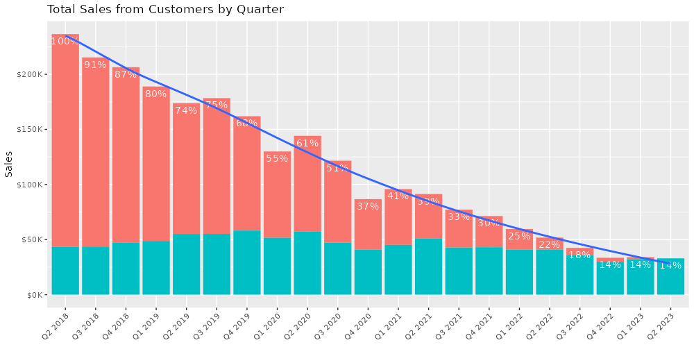
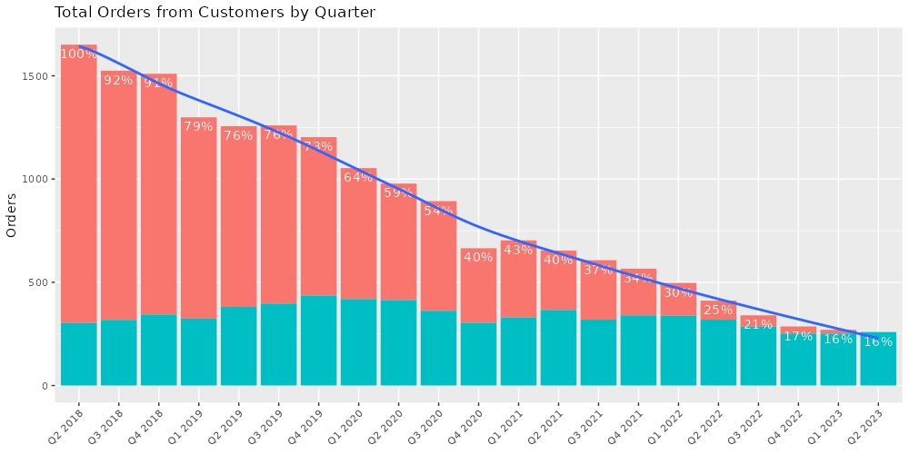

Objective
This post aims to arrive at a defensible prediction for a cannabis customer’s LTV, as well as estimate of the length of their lifetime, and finally, to use these insights to better understand the purchase behavior of retained customers in the cannabis market.
Summary of Results
In this analysis, I demonstrate that the average length of a customer’s lifetime is about 10 quarters or nearly 3 years, additionally, a retained customer will have about 55 orders and spend roughly $7K over this period.
Using the insights here, we can begin to understand how important retention is in cannabis through the purchase behavior of retained customers:
Retained customers return on average every 3 weeks
Retained customers spend on average $130 per order
Retained customers generate on average $7K in sales
Retained customers are loyal for an average period of 3 years
Methodology
In this analysis, I explore customer cohorts for a sampled set of orgs on a quarterly basis for a 5-year period. Using their sales data, I first model a rate of drop off of those customers. Next I analyze sales attrition as well as orders attrition from the decreasing pool of customers each quarter. Lastly, I derive an estimate for LTV and use that to better understand the purchase behavior of retained customers in the cannabis market.
Analysis
I first estimated the length of a customers average life-time by analyzing cohorts of customers for a set of sampled orgs. For example, using one org in my sample, I identified 212 customers with transactions in Q2 of 2018, and tracked these particular customers, their orders, and their sales, across quarters until Q2 2023. In the last quarter only 34 of these customers remain with purchases in each period. This attrition curve reaches 50% by roughly the 10th quarter (e.g. 50% of the customers remain after 10 quarters).
This plot demonstrates the average lifetime of a cannabis consumer:

Once we arrived at a lifetime estimate of 10 quarters, I analyzed the average sales, and the average orders per quarter for these customers.
I found that on average customers will return for nearly 3 years and spend 7K across 55 orders in their lifetimes
The figures below track both sales and orders coming from the customers identified across time:

